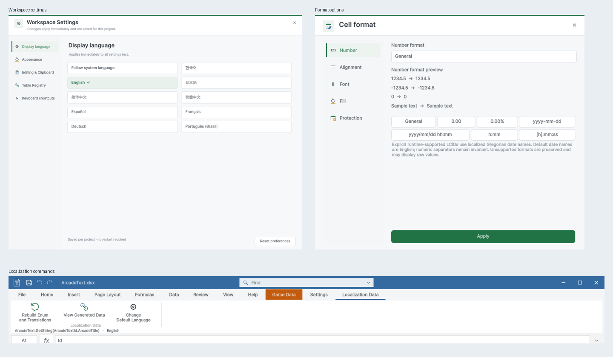

Tracefolio REPORTS & ISSUES
Tracefolio REPORTS & ISSUES디자인·폴더 정리·AI CLI 결과
기존 기록 이전원문에 기록된 작업 내용과 당시 검증 범위를 정리한 보관 기록입니다.
디자인·폴더·CLI 결과
디자인·폴더 정리·AI CLI 결과
Unity 6000.0.83f1 / Windows · 화면 조작 없음 · 과거 TC를 재실행한 것처럼 합산하지 않았습니다.

완료한 내용
옵션·팝업·로컬라이징 리본을 공통 디자인으로 정리하고 Play 밝기와 미저장 닫기 보호를 적용했습니다. 샘플 최상위 폴더는 15개에서 8개로 정리했으며, 원본 데이터는 Sample/Data에 모았습니다. CLI에는 구조 조회, 저장 없는 변경 미리보기, 셀별 진단과 제한된 변경 목록을 추가했습니다.
폴더 안내 · 한글 가이드 · CLI 참조 · 스토어 자료
실제 검증
| 항목 | 결과 |
|---|---|
| CLI시나리오 | 29 |
| 반복dryRun | 12 |
| 닫기시나리오 | 9 |
| 닫기확인항목 | 26 |
| 씬 | 25 |
| 씬과경로확인항목 | 22559 |
| 이동GUID대조 | 329 |
| 옵션캡처 | 27 |
| 가이드이미지 | 25 |
| 가이드언어 | 9 |
| 브라우저검사 | 128 |
| PDF페이지 | 24 |
| 스토어이미지 | 11 |
CLI 테스트
| 사례 | 결과 |
|---|---|
| 지원 명령 조회 | 통과 |
| 일반 시트 구조 조회 | 통과 |
| 등록 게임 테이블과 byte 타입 조회 | 통과 |
| 로컬 Enum 이름과 후보 조회 | 통과 |
| dry-run 수식 포함 변경 미리보기 및 원본 불변 | 통과 |
| dry-run 오래된 리비전 거부 | 통과 |
| 동일 dry-run 12회 반복 후 원본 불변 | 통과 |
| 일괄 저장 및 재조회 수식 계산 | 통과 |
| 같은 값 재전송은 실제 변경 0개 | 통과 |
| byte 범위 초과 dry-run 진단 | 통과 |
| byte 음수 저장 거부 및 파일 불변 | 통과 |
| 숫자 대신 문자 입력 저장 거부 | 통과 |
| 정상·비정상 혼합 배치 전체 거부 | 통과 |
| 미정의 Enum 후보 입력 시 셀 진단 | 통과 |
| 중복 셀 주소 거부 | 통과 |
| 빈 배치 거부 | 통과 |
| 시트 경계 초과 거부 | 통과 |
| 경로 탈출 거부 | 통과 |
| 정상 byte 저장 후 바이너리 일치 | 통과 |
| 기본 타입 목록 제공 | 통과 |
| 행 좌표 생략은 A1로 간주하지 않고 거부 | 통과 |
| 실수 좌표 거부 | 통과 |
| boolean 좌표 거부 | 통과 |
| 입력 필드 생략은 셀 삭제로 간주하지 않고 거부 | 통과 |
| 숫자 JSON 입력은 문자열 명시 요구 | 통과 |
| 대량 변경 미리보기 기본 100개 제한과 전체 개수 | 통과 |
| CSV 미리보기 원본 불변 및 일괄 저장 | 통과 |
| 일반 엑셀의 2행 값을 데이터 타입으로 추측하지 않음 | 통과 |
| 미리보기 0개 제한 거부 | 통과 |
범위와 미확인 사항
네이티브 OS/Unity 전체 종료 확인창은 이번 입력 검증 범위가 아닙니다.
닫기 선택은 테스트 대리자로 주입하고 실제 Unity 헤더·키보드 이벤트와 창 생존·저장·복구 기록을 확인했습니다.
씬 검사는 누락 스크립트·참조·경로 검증이며 모든 게임을 다시 수동 플레이했다는 의미가 아닙니다.
사용자가 이전에 닫은 정확한 파일은 미확인입니다. 복구 후보 두 개는 WorkFiles/Recovery에 별도 보관했습니다.
공유 스크린샷은 영어 UI입니다. 9개 언어의 네이티브 UI 전체 배치를 인증한 것은 아닙니다.
스토어 자료는 로컬 초안이며 업로드·제출하지 않았습니다.
XERJ 재색인에서 삭제 문서 정리 오류가 발생하고 검색 결과가 누락돼 rg로 검증했습니다.
상세 근거: CLI-TC.ko.json / GUID-Continuity.json / Layout/Results.json / CloseSafety/Results.tsv / Docs/LocalizedDocs.json / Docs/BrowserChecks.json / Docs/PDFChecks.json
원문과 편집 이력
- 원문 SHA-256:
da11c41cf7e4a0913a7f5bc3ac14856f2fc9a02fb55a874d1edb88c632bb0aea - 표시 날짜는 원본 파일의 수정 시각입니다. 작업 완료 시각은 원문에 있는 값을 기준으로 확인합니다.